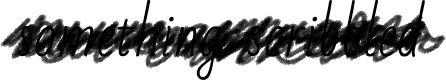

Dear Skeigi,
I‘m writing to let you know I made it back safely to Raven‘s Port, as promised. I got back late last night, and Davian left this morning for who knows where. Don‘t worry. He was very civil the whole way, and I kept my distance. Not even a scratch. Well, not from him at least. I have a few minor injuries from other things, but nothing serious. Don‘t worry. They‘ll heal quickly.
How is the tour? How is Littenby? I still wish I could see it. It sounds wonderful, and I thought about it a lot on my journey.  I thought about you too.
Funny, it took me almost my whole way here to convince myself I was going home and not leaving it. But I think I finally realized something on my way back. You kept asking why I would give up my family to stay there with you, and I consistently insisted I didn‘t have any. And technically I don‘t. But you were right. You were right about a lot of things, but especially this. I do have family here. Rosamund, Berg, Ravvi, the Siren Huntress even—they are my family. And maybe I need to accept that now, and I need to accept that this is home. It‘s not what I wanted or what has always been my ideal, but it‘s what I have. And maybe that can be okay. Maybe I can be happy here too. I‘m going to try. Maybe your wish for me will come true after all.
I know I probably shouldn‘t say this. I‘m probably just making things infinitely worse, but I can‘t not tell you. You will always be all those things to me too. I think a piece of my heart will always be in Falsk with you. I don‘t think I‘ll ever not wonder what our life would have been together. I‘ll probably have moments years to come where I think about what would be happening at that point if I had stayed—whether we‘d still be traveling, what we would be doing to help each city, whether we‘d maybe be our own family by then. Or maybe everything would have fallen apart and we‘d hate eachother, but I don‘t think wishful daydreams tend to focus on those kinds of possibilities. And I don‘t think that would have happened anyway.
The point is, even though things change and we both have to move on now, know I‘ll always care about you. That will never change. I‘ll always want your happiness, I‘ll always want your success, and I‘ll always want to know you‘re okay. So if it‘s not too hard, please keep in touch. I want to know all the wonderful things you do, even if I have to celebrate them from afar. And I hope someday you find someone who can celebrate them there with you. She will be an incredibly fortunate woman.
Anyway, enough of that. Rosamund and Berg are arguing about something down the hall, so I should probably go see what that‘s all about. And I want to make sure this letter gets sent with the next caravan. If you don‘t want to write back, that‘s okay. I understand. But I‘ll probably keep sending you letters until you tell me to stop. I think you were spared the brunt of it while we were together, but I can be very persistent when it comes to things like that, so unless I hear from you otherwise, they‘ll keep coming.
I hope this letter finds you well. I‘m sure you are bringing joy to everyone you‘re playing for. They are lucky to experience all that you share when you play. I wish everyone here could have that experience too. Especially me.
I hope today is a good day.
All My Love,

PS—I probably shouldn‘t write to you in Falsk under my actual name. I don‘t want to cause any trouble for you if anyone sees letters from me, seeing as I‘m sure I‘m a wanted criminal now. And I know how fast word gets around about these things. If you see a letter from Rosamund Riglietti, know it‘s from me. I‘m hoping this letter won‘t be a problem since I‘m sending it to Littenby. I seem to remember you saying people weren‘t quite as concerned about these things there.